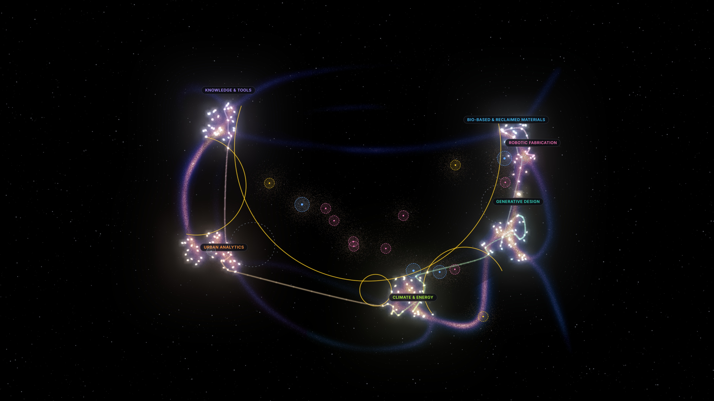
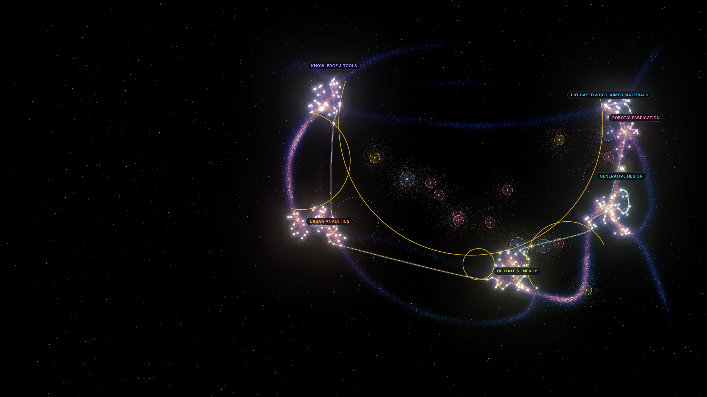
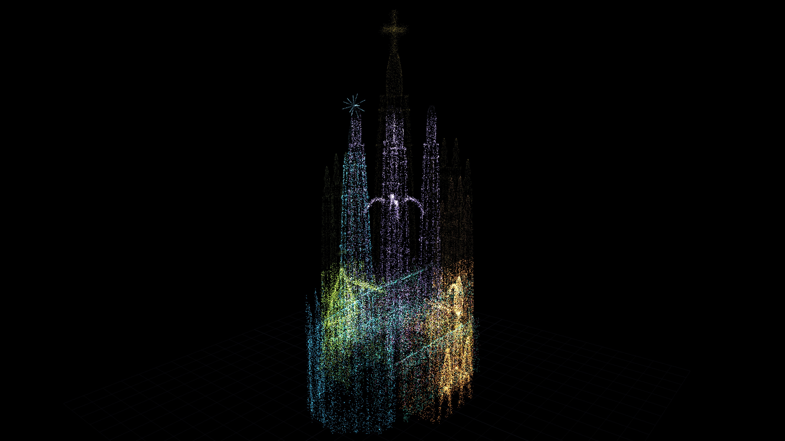

MaAI Atlas
One searchable map of student research in the Master in AI for Architecture at IAAC.
Good student work becomes invisible after each year.
One atlas answers each problem.
Four sources feed one automatic pipeline.
Posts from blog.iaac.net through the WordPress API: text, people, references and GitHub links. One request per second.
Each linked repository is checked for six reproducibility habits and its main languages.
Students add their own project. It goes to a faculty review queue before it is public.
GROBID reads full PDFs. OpenAlex matches references to DOIs and adds external papers.
Every project gets one standard record.
- Title and abstract
- Authors and advisors
- Cohort24/25, 25/26, 26/27
- Work typethesis, studio, seminar
- AI methods26 in a fixed list
- Tools14, e.g. PyTorch, Rhino
- Datasets22, e.g. OSM, Landsat
- Domain and scale
- Source sentence for each tag
- Referencesmerged bibliography
- Repository link
- Reproducibility score0 to 6
- Permission to publish
- Show names or not
- Review statuspending until approved
Projects with similar text sit close together.
From a scatter of dots to a cosmic web.

Tero et al., Science 327 (2010) 439. Jones, Artificial Life 16 (2010). Burchett et al., ApJ Letters 891 (2020) L35. Elek et al., Artificial Life 28 (2022) 22.

The cosmic web of MaAI research.
Like the Sagrada Família, research is built by many generations.
| Each stone | → | One student project |
| Each generation of builders | → | One cohort, from base to spires |
| Unbuilt scaffold | → | A research gap |
| Glory façade, not yet built | → | The frontier between fields |
Sources: sagradafamilia.org (history, 2026 news); Catalan News and Ara, 2026.

The same points build the basilica.
Four checks find open thesis topics, with evidence.
Open areas between two busy branches.
Between Generative Design and Climate.
A common method and a common topic, never combined.
Generative AI × Urban Heat: 0 projects.
Active outside research that MaAI does not cover.
27 papers on causal AI for energy.
Topics that dropped in the newest cohort.
Robotic fabrication: 7 to 1.
Some common methods never met common topics.
Reproducible code earns a larger stone.
Search in plain words, not keywords.
Shared papers connect the branches.
The same pipeline is ready for every IAAC programme.
Confirm which posts, PDFs and names can be public.
Add thesis PDFs and DOI links next to the blog.
New cohorts add stones without moving old ones.
Post counts: blog.iaac.net WordPress API, 25 Nov 2026.